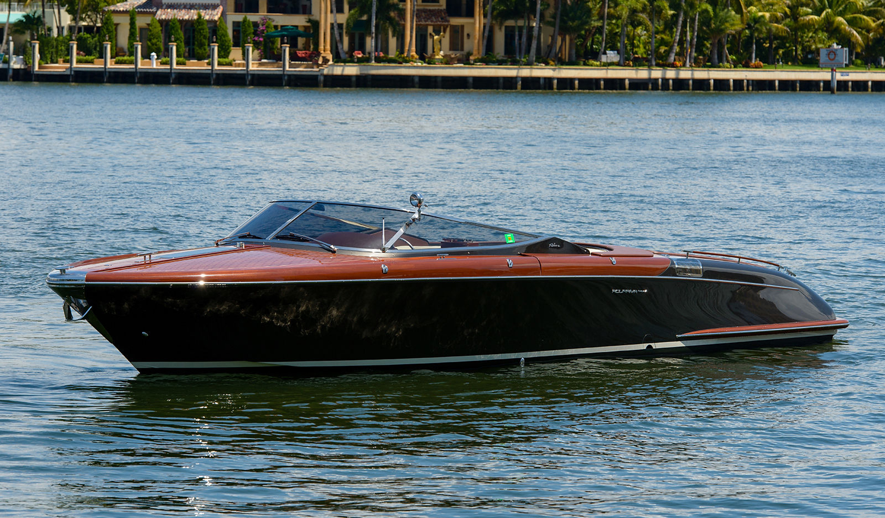

M-800
- Länge: 24 Meter
- Breite: 6 Meter
- Tiefe: 4 Meter


Technische Daten
| No. | Funktionsbeschreibungen | Markendetails | Bemerkungen |
|---|---|---|---|
| (1) | Informationen zu Motoren Motorboote mit Außenbordmotor verfügen über einen Rumpf, der vollständig in der Maschine gereinigt werden kann. Das gleiche gilt für alle Arten von Motorbooten, bei denen die Antrieb/Propeller ragt im Heck hervor, wie zum Beispiel Wasserstrahlen, Oberflächenantriebe und klappbare Heckantriebe. | Die Verbesserung der Kraftstoffeffizienz wird die Reinigung Ihres Bootsrumpfes zur Folge haben wirkt sich unmittelbar auf die Leistung des Bootes aus und verbessert den Kraftstoffverbrauch Effizienz und Geschwindigkeit | Die Waschanlagen reinigen die meisten Motorboote und Segelboote ab 6 Jahren Meter bis etwa 16 Meter (53 Fuß) |
| (2) | Zum Entfernen kann am Heck ein Handhochdruckreiniger verwendet werden Schmutz entfernen, wenn dieser zugänglich ist. Die Vor- und Nachbilder unten Geben Sie an, welchen Teil des Rumpfes die Maschine erreichen und reinigen kann. Da es viele Rumpftypen und individuelle Unterschiede gibt, ist die Ergebnisse können variieren | 100 % ökologisch Durch ein regelmäßiges Reinigungsprogramm bleibt Ihr Boot erhalten frei von Fouling, also umweltschädlichem Antifouling Lacke können reduziert werden. | Einfahren, waschen, rausfahren Wie beim Auto, nur beim Boot. In 15 Minuten ist der Rumpf Ihres Bootes sauber und Sie können loslegen gehen |
| (3) | Zum Waschen der gesamten Oberfläche von kleinen und mittelgroßen Booten ab 6 Jahren Meter bis 18 Meter lang mit TSI 800 Bootswaschanlage. | Vereinfachen Sie die Bootswartung. Sparen Sie sich die Mühe des Schabens, Jahr für Jahr schleife und lackiere ich das Boot. Kein Inhalieren mehr Schadstoffe | Die Länge des Kiels darf 2,3 Meter nicht überschreiten Wasserlinie bis zur Unterseite des Kiels. |
| (4) | Wählen Sie Ihren Bootstyp und finden Sie heraus, ob der Rumpf Ihres Bootes passt gereinigt werden kann. | Neue Marke TSI 808 Außerdem haben wir eine neue Waschsystemausrüstung im Dienst am 2024. Es ist für XXXL-Boote und Yachten bis 808 Meter lang. | Die Länge des Kiels selbst darf 1,6 Meter nicht überschreiten von der Unterseite des Rumpfes bis zur Unterseite des Kiels) |